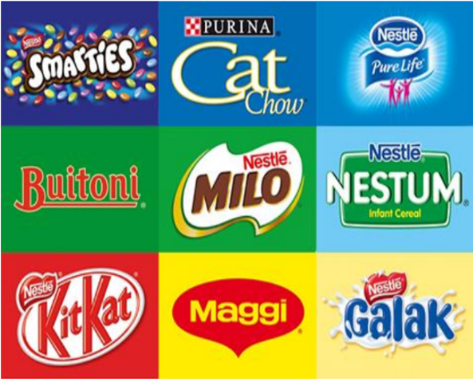

This project was distinctive in its requirement for the creation of a product comparison dashboard aimed at aiding Nestle's Growth and Strategy Department (GSD) in making informed decisions regarding expansion initiatives. Through meticulous analysis and visualization, it was determined that launching a sales campaign in Western Australia to bolster sales of existing products would be more beneficial before introducing new complementary products. The recommendations resulting from the analysis greatly contributed to the G & S department's successful management of the expansion plan, achieving a 95% success rate. This analysis was performed using Power BI.


The project was launched to analyze the company's supply chain and provide insights into food deliveries customized to customer preferences. Customer feedback highlighted the significance of both food quality and service excellence. The recommendations derived from this analysis ensured consistent quality standards, resulting in a 30% increase in customer retention. Additionally, strategies were developed to attract medium and high-income customers, leading to a 25% rise in customer numbers. The analysis was performed usining Tableau

The company sought insights into its flight operations to strategically position itself for growth and expansion. Consequently, a project was commissioned utilizing available data on flights, aircraft, routes, and airport information. Analysis of the data yielded significant recommendations, such as discontinuing flights on routes that consistently incurred losses over the years. Additionally, increased resources were allocated to the top 5 profitable routes, resulting in a 15% revenue boost. This analysis was conducted leveraging Microsoft Excel pivot table.

With an imminent fundraising strategy meeting on the horizon, the company initiated a project to extract insights from donation data, aiming to inform the company’s fundraising strategy and bolster donation figures. Following the analysis, tailored recommendations were crafted, culminating in a remarkable 40% surge in donations.

This project underscores the power of data in illuminating customer demographics and shopping preferences. Its objective was to provide the company with deep insights into their customer base and enhance understanding of their shopping habits. Through the analysis, we uncovered valuable insights such as the preferred product categories, the age distribution, and the professional backgrounds of the majority of customers. Armed with this knowledge, the company was able to tailor strategies to enhance services by 20% and cater more effectively to customers across different segments.
The analysis was conducted using Microsoft Excel, leveraging its capabilities to derive actionable insights and inform strategic decision-making.
🌟 Delivering Data-Driven Insights for Global Business Expansion! 🌟
📊 The task for this project required that we undertake a comprehensive analysis of a complex dataset from a multinational electronic business spanning 20 countries. The company wanted us to harness data for informed decisions.
🔍I was tasked with distilling key KPIs, creating an insightful dashboard that provided an instant snapshot of
1. Total Customer Purchases
2. Total Items Sold
3. Total Profit
4. Total Revenue
5. Profit Margin
📈 Beyond core KPIs, my analysis dove deeper into:
1. Total Items Sold per Product
2. Identifying Top 5 Profit-Generating Countries
3. Revenue Breakdown by Product Categories
4. Uncovering High-Value Customers
5. Revenue Analysis Across Countries
🔍During my analysis, I pinpointed a pivotal factor: a significant sales dip in May, particularly a 55% plunge in video category sales, specifically digital cameras.
🌐Findings from my analysis paved the way for strategic insights, advising the management to refocus efforts for enhanced market share. Pinpointing high-performing product categories, top customers, and revenue-driving countries became a clear path for growth.

With this project, I had the opportunity to spearhead a comprehensive analysis of a robust healthcare dataset, geared towards driving informed decisions within the health sector, leveraging the amazing features of Power BI. The client needed insight into their dataset for informed decision-making. The primary objective was to distill vital KPIs and craft an intuitive dashboard, offering an immediate snapshot:
1. Total Expenses
2. Total Profit
3. Total Revenue
4. Profit Margin
5. Number of Hospital Visits by Patients
6. Number of Doctors and Specialties
Delving deeper into the data, I further investigated:
1. Revenue Breakdown by Quarter, Year, Specialist, and Service Categories
2. Patient Visits Analysis by Quarter and Year
3. Profits Margins linked to Doctors and Patients
Result: The analysis highlighted service categories with substantial expenses, unlocking valuable insights. As well as services categories, and specialist doctors that generated the most revenue.
Insights from this analysis guided strategic recommendations. Recommending a realignment of focus towards service categories and specialties yielding optimal revenue while pinpointing underperforming areas for targeted improvement strategies.